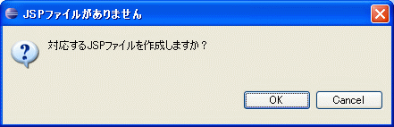

SAStrutsPlugin
使い方
プロジェクトの設定
- プロジェクトのプロパティで「SAStruts」を選択し、Webapp ルートを選択します。
- プロジェクトのプロパティで「SAStruts」を選択し、Main Java Source Pathを選択します。
- プロジェクトのプロパティで「SAStruts」を選択し、convention.dicon パスを選択します。
- プロジェクトのプロパティで「SAStruts」を選択し、WebServerを選択します。
- プロジェクトのプロパティで「SAStruts」を選択し、コンテキストを選択します。

Super Agile Strutsチュートリアル(sa-struts-tutorial)であれば「/src/main/webapp」、「/src/main/java」、「/src/main/resouces/convention.dicon」、「http://localhost:8080」、 コンテキストは空となります。コンテキストが空の場合はEclipseのプロジェクト名がコンテキスト名として採用されます。チュートリアルであればsa-struts-tutorialとなります。
SAStrutsPluginは、 Webapp ルートを基点にJSPファイルのパスを、 Main Java Source Pathを基点にJavaファイルのパスを、 convention.dicon パスを基点にルートパッケージ名を、 取得します。 WebServer、コンテキストは後述するView on Server機能でアクセスするURLの基点となります。
JSPファイルを開く
JSPファイル名が記述されている文字列のある行からポップアップメニューかショートカットキー（Ctrl+8）で対応するJSPファイルを開くことができます。

JSPファイルを作成する
- 対応するJSPファイルが存在しない場合は、 メッセージボックスがポップアップします。
- OKをクリックすると「JSPファイルの新規作成ウィザード」が開きます。 保存先のディレクトリやJSPファイル名は自動的に決まるので、ほとんどの場合、変更する必要はありません。
JSPファイルを開こうとして対応するJSPファイルが存在しない場合は、JSPファイル作成用のウィザードを使って新規に作成することができます。 ファイル名や保存するフォルダは自動的に決定されるのでほとんどの場合変更する必要はありません。


Javaファイルを開く
JSP Editor上からポップアップメニューかショートカットキー（Ctrl+8）で対応するJavaソースを開くことができます。
- s:formタグの行から操作した場合はJavaソースのindexメソッドに遷移します。urlPatternを使っている場合は該当するメソッドに遷移します。
- inputタグの行から操作した場合はJavaソースの該当するメソッド（name属性と同じメソッド名）に遷移します。
- aタグ、s:linkタグのhref属性でurlPatternを使っている場合は、aタグの行で操作すれば該当するメソッドに遷移します。
Javaファイルを作成する
- 対応するJavaファイルが存在しない場合は、 メッセージボックスがポップアップします。
- OKをクリックすると「Javaファイルの新規作成ウィザード」が開きます。 保存先のディレクトリやJavaファイル名は自動的に決まるので、ほとんどの場合、変更する必要はありません。
Javaファイルを開こうとして対応するJavaファイルが存在しない場合は、Javaファイル作成用のウィザードを使って新規に作成することができます。 ファイル名や保存するフォルダは自動的に決定されるのでほとんどの場合変更する必要はありません。

JSP Editorの補完機能
WTPのJSP Editor上でActionFormのプロパティやActionの実行メソッドを補完することができます。
html:text等の入力系htmlタグのproperty属性の場合はActionFormのpublicフィールドプロパティを、
html:submit等のボタン系htmlタグのname属性の場合はActionの実行メソッド（public、戻り値がString、引数無し、@Executeアノテーション付き）を補完することができます。
なおc:foreachタグには対応していません。

View on Server機能
APサーバを起動後、Actionクラスを選択してポップアップメニュー、ショートカットキーからブラウザを起動して表示を確認することができます。
View SAStruts Help機能
ポップアップメニュー、ショートカットキーからブラウザを起動してSAStrutsのトップページを表示することができます。